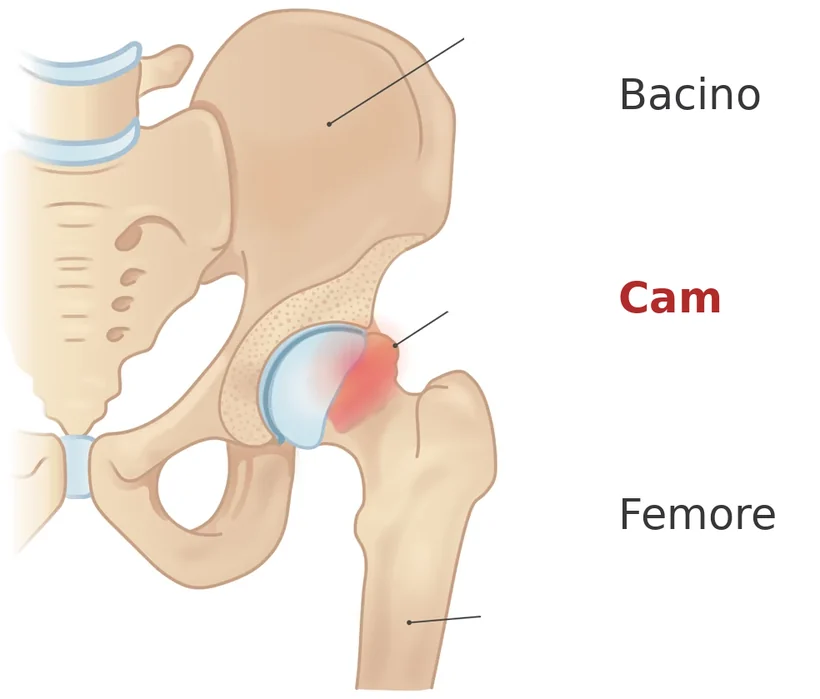
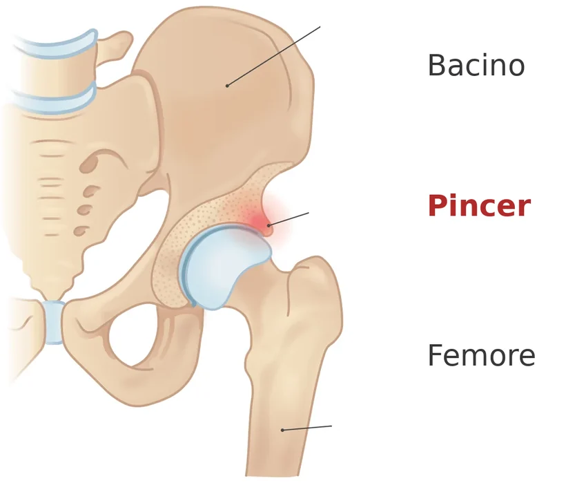

È una condizione in cui la forma della testa del femore, del bordo dell'acetabolo o di entrambi fa sì che le due superfici entrino in contatto in modo anomalo durante certi movimenti dell'anca, provocando dolore.
Il punto più importante, e il più frainteso: la diagnosi richiede tre cose insieme, cioè sintomi, segni alla visita e alterazioni all'imaging. Nessuna delle tre, da sola, basta.[1]

Tipo cam
Tipo pincerCome si manifesta
- Dolore all'inguine o in profondità nell'anca, legato al movimento o alla posizione.
- Peggiora stando seduti a lungo, soprattutto su sedili bassi, e alzandosi.
- Si accende nei movimenti che portano il ginocchio verso il petto e verso l'interno.
- A volte scatti, blocchi o cedimenti; rigidità e riduzione dei movimenti dell'anca.
- Colpisce tipicamente giovani adulti attivi, e si riscontra spesso in chi pratica sport con cambi di direzione.
Il documento internazionale di riferimento preferisce parlare di morfologia di tipo CAM o PINCER, e non di «deformità»: è una forma dell'osso, presente anche in moltissime persone che non hanno alcun sintomo.[1]
Quando preoccuparsi
Contatta il medico presto se
- il dolore è iniziato dopo un trauma e non riesci a caricare bene il peso;
- l'anca si blocca improvvisamente e non si sblocca;
- compaiono febbre o malessere generale;
- il dolore notturno ti sveglia e non cambia con la posizione;
- stai perdendo forza alla gamba.
Cosa puoi fare tu
Fai
- Individua le posizioni che scatenano il dolore e riducile per un periodo: spesso sono il sedersi basso e certe posture di allenamento.
- Alza il sedile di auto e ufficio, e alzati più spesso.
- Comincia un programma mirato su stabilità, controllo del movimento e forza dell'anca.[1]
- Per la terapia farmacologica chiedi al medico.
Non fare
- Non forzare i movimenti che riproducono il dolore pensando di sbloccare l'anca.
- Non trarre conclusioni da una radiografia che mostra una morfologia CAM: da sola non fa diagnosi.
- Non affrettarti a fare esami diagnostici senza aver chiesto il parere del tuo medico.
Servono esami?
Sì, ma come uno dei tre elementi della diagnosi, non come la diagnosi. L'imaging di base sono due proiezioni radiografiche dell'anca.[1]
Alla visita il test più usato porta il ginocchio verso il petto ruotando l'anca verso l'interno: è sensibile ma poco specifico, cioè quando è negativo aiuta a escludere, quando è positivo non conferma da solo.[1]
È il medico specialista che valuta sulla base della visita quali esami servano e come leggerli accanto al quadro clinico.
Le cure, e quanto funzionano
Le due strade
Il documento di consenso indica due possibilità: la gestione conservativa — educazione, attesa vigile, modifica dei carichi — con una terapia di esercizi mirati a stabilità, controllo neuromuscolare, forza e schemi di movimento; oppure la chirurgia.[1]
Il confronto diretto
Uno studio randomizzato condotto in ventitré ospedali britannici ha messo a confronto l'artroscopia dell'anca e un programma di fisioterapia personalizzato, su 348 partecipanti.[2]
A dodici mesi entrambi i gruppi erano migliorati: il punteggio di qualità della vita legata all'anca è passato da 39 a 59 nel gruppo operato e da 36 a 50 in quello trattato con fisioterapia. La differenza a favore dell'intervento è stata di 6,8 punti, di poco superiore alla soglia considerata clinicamente rilevante, che è 6,1.[2]
Gli eventi avversi seri sono stati pochi in entrambi i gruppi, ma cinque dei sei registrati nel gruppo operato erano legati al trattamento.[2]
Letto senza forzature, il risultato dice che l'intervento dà un vantaggio reale ma contenuto, e che la fisioterapia ben condotta porta anch'essa a un miglioramento importante. È la ragione per cui la scelta va costruita sul singolo caso.
Una domanda ancora aperta
Il documento internazionale è esplicito su un punto che molte persone chiedono: non si sa se trattare l'impingement prevenga l'artrosi dell'anca.[1] Oggi quindi non è un argomento che possa essere usato per decidere.
Quando serve lo specialista
Per mettere insieme i tre elementi della diagnosi, perché è proprio qui che si sbaglia più spesso, e per impostare il programma di esercizio, che è il primo passo in quasi tutti i casi.
E, se il percorso conservativo non basta, per discutere, numeri alla mano, quale trattamento sia più idoneo per la tua situazione.
Da dove vengono queste informazioni
- Griffin DR, Dickenson EJ, O'Donnell J, et al. The Warwick Agreement on femoroacetabular impingement syndrome (FAI syndrome): an international consensus statement. Br J Sports Med 2016;50(19):1169–1176. doi:10.1136/bjsports-2016-096743
- Griffin DR, Dickenson EJ, Wall PDH, et al. Hip arthroscopy versus best conservative care for the treatment of femoroacetabular impingement syndrome (UK FASHIoN): a multicentre randomised controlled trial. Lancet 2018;391(10136):2225–2235. doi:10.1016/S0140-6736(18)31202-9. Trecentoquarantotto partecipanti in 23 ospedali britannici.
Scheda aggiornata il 9 novembre 2026. Prossima revisione prevista entro novembre 2028.